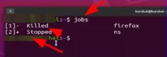
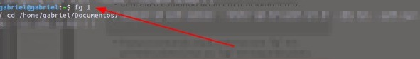

👩💻 Aqui está a lista com os principais comandos do Linux que você pode usar
🤴🏻 Hierarquia
o Root também representado como “/” é a primeira primeira hierarquia do sistema de arquivos, sendo a Hierarquia primária.
Algumas das principais hierarquias do sistema: /boot/ = Arquivos do sistema de Boot; /dev/ = Arquivos de dispositivos; /etc/ = arquivos de configuração do sistema; /home/ = Diretório dos usuários comuns do sistema; /lib/ = Bibliotecas essenciais do sistema e os módulos do Kernel; /opt/ = Instalação de programas não oficiais da distribuição ou feita pelo usuário; /sbin/ = Armazena comandos executáveis como o “shutdown”; /srv/= Diretório para dados de serviços fornecidos pelo sistema; /tmp/ = Diretório para arquivos temporários; /usr/ = Segunda hierarquia sistema, onde ficam os usuários comuns do sistema e programas; /var/ = Diretório com arquivos variáveis gerados pelos programas do sistema, como logs, email e cache; /root/ = Diretório do usuário root; /proc/ = Diretório virtual controlado pelo Kernel com configuração total do sistema;
✍🏻✍🏻✍🏻✍🏻✍🏻✍🏻✍🏻✍🏻✍🏻✍🏻✍🏻✍🏻✍🏻✍🏻✍🏻✍🏻✍🏻✍🏻✍🏻✍🏻✍🏻
🌎 Atalhos Globais
CTRL + A = jogar o curso de digitação para o começo da linha de um comando;
CTRL + E = jogar o curso de digitação para o final da linha de um comando;
CTRL + U =Apagar um comando digitado na tela;
CTRL + W = Apaga a última palavra digitada em uma linha de comando;
CTRL + R = Busca recursiva, basta digitar o início de um comando que o terminal irá comparar com outros comandos já recebidos irá tentar completar o comando;
!! = Executa o último comando que rodou;
CTRL + D = Fecha sessão aberta, como o comando “exit”;
CTRL + C = Cancela comando atual em funcionamento;
CTRL + Z = Pausa o comando atual
-> quando você realiza o comando de pausa processos o comando vai ficar parado, mas consumindo memória ram ainda, irá aparecer uma mensagem do tipo no seu terminal:
Informando que o comando foi pausado e apresentando um número de identificação para ele. Caso você queira ver todos os comandos parados no terminal, você pode dar o comando “$jobs” que o terminal irá listar todos os comandos pausados com seus códigos de identificação:
Caso você queira voltar a rodar o comando em Primeiro plano basta digitar o comando “fg” e o número de identificação do comando pausado, exemplo.:
Caso você queira voltar a rodar o comando em Segundo plano basta digitar o comando “bg” e o número de identificação do comando pausado, exemplo.: “bg 1”
✍🏻✍🏻✍🏻✍🏻✍🏻✍🏻✍🏻✍🏻✍🏻✍🏻✍🏻✍🏻✍🏻✍🏻✍🏻✍🏻✍🏻✍🏻✍🏻✍🏻✍🏻
👩💻 Comandos
Antes de tudo aqui vai algumas dicas para tirar dúvidas sobre o uso de algo comando: Quando precisar de uma breve descrição de um comando você pode usar o “--help” Exemplo.: ls –help Você também pode consultar o manual de cada comando dentro do próprio terminal com o comando “man”, exemplo.: “man cat”